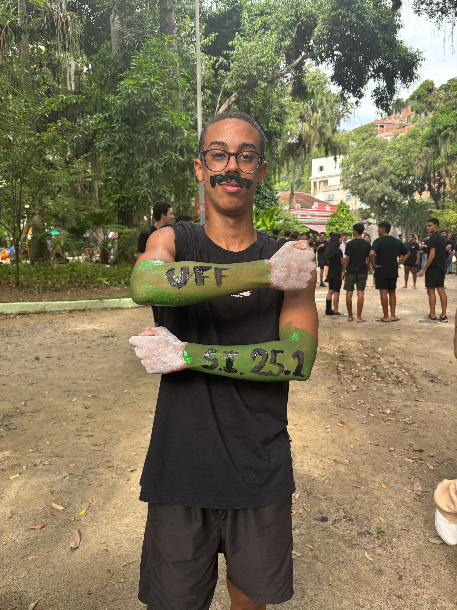

Olá, meu nome é Augusto, tenho 19 anos e sou estudante de sistemas de informação na UFF vai fazer 1 ano. Gosto muito da universidade, conheci muitas pessoas diferentes e estudei sobre algumas das coisas que mais gosto.
Torço para o melhor e maior time do mundo (Flamengo obvio) e meu passatempo favorito é assitir os jogos com minha família e amigos.Além disso gosto muito de música(quase qualquer estilo), jogos, star wars, viajar, ir a shows,
ir a praia,ler e outros esportes como basquete.Sempre gostei de tecnologia e criar coisas, por isso escolhi a programação como profissão e sonho em tarbalhar com isso.
Hobbies e Top 5
Hobbies
- Jogar futebol
- jogar videogame
- Surfar
- Cozinnhar
- Ping pong

Top 5 melhores séries
- Game of Thrones
- The Office
- Dark
- Modern Family
- Breaking Bad